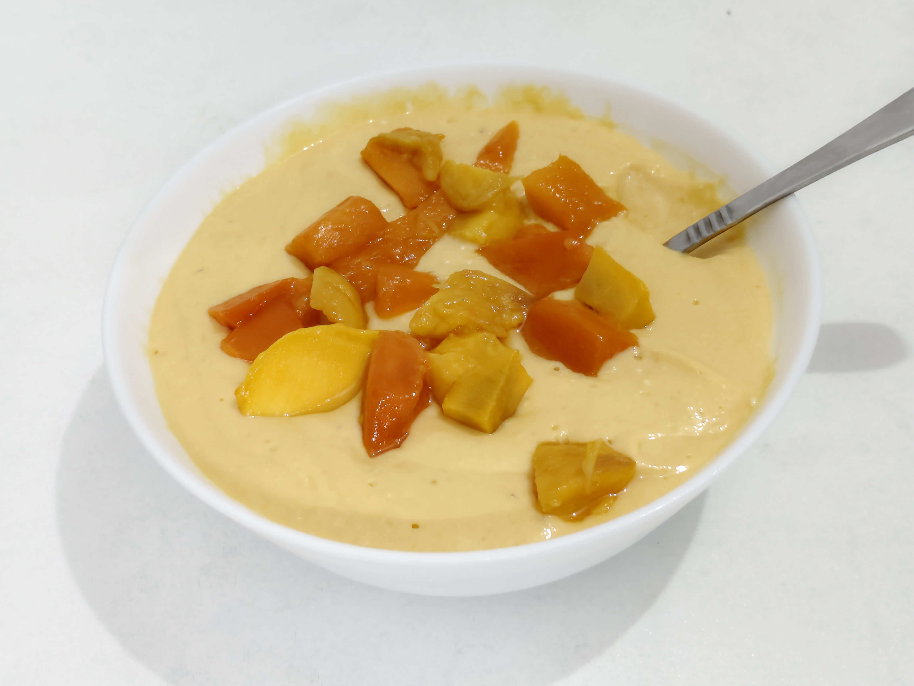

Home
Mango Mousse!

An easy and healthy concoction of paneer, yogurt, and ripe mango.
The protein-filled paneer is mixed with the delicious taste of ripe mangoes to provide you with a fulfilling dish. Yogurt is added to this mixture as an important component.
Ingredients:
- 140g paneer, cubed
- 1 tablespoon yogurt
- one and a half medium mangoes, sliced
Steps:
- Add the cubed paneer and sliced mangoes to a blender and blend them until thick and creamy.
- Take is all out in a bowl and refrigerate it for an hour or two.
- Enjoy!